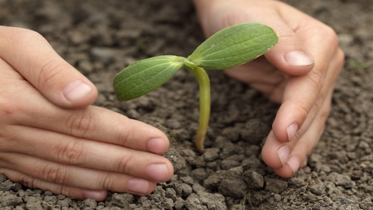
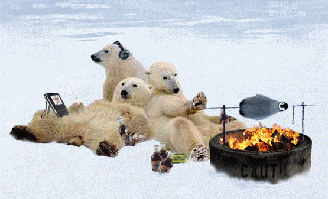
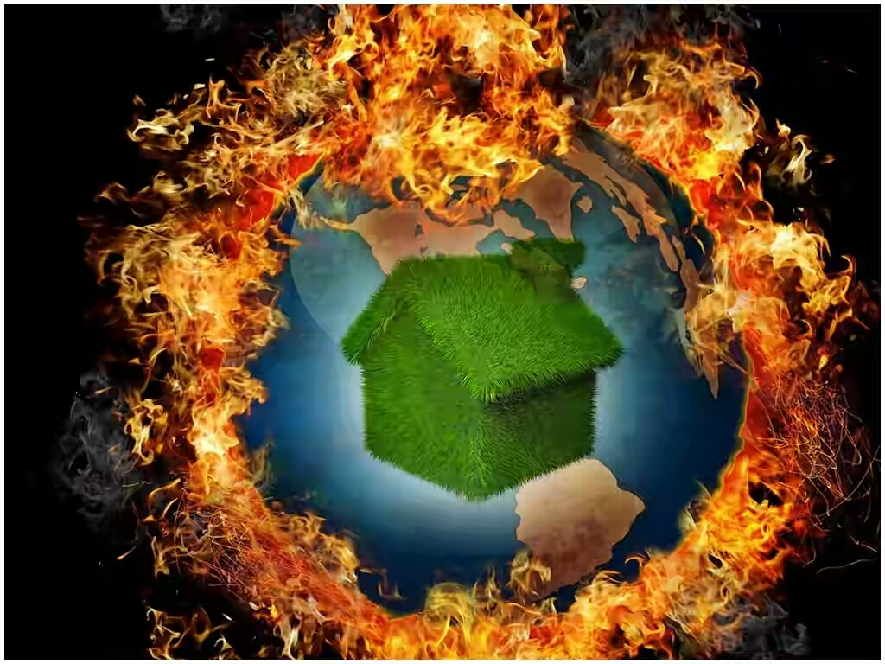
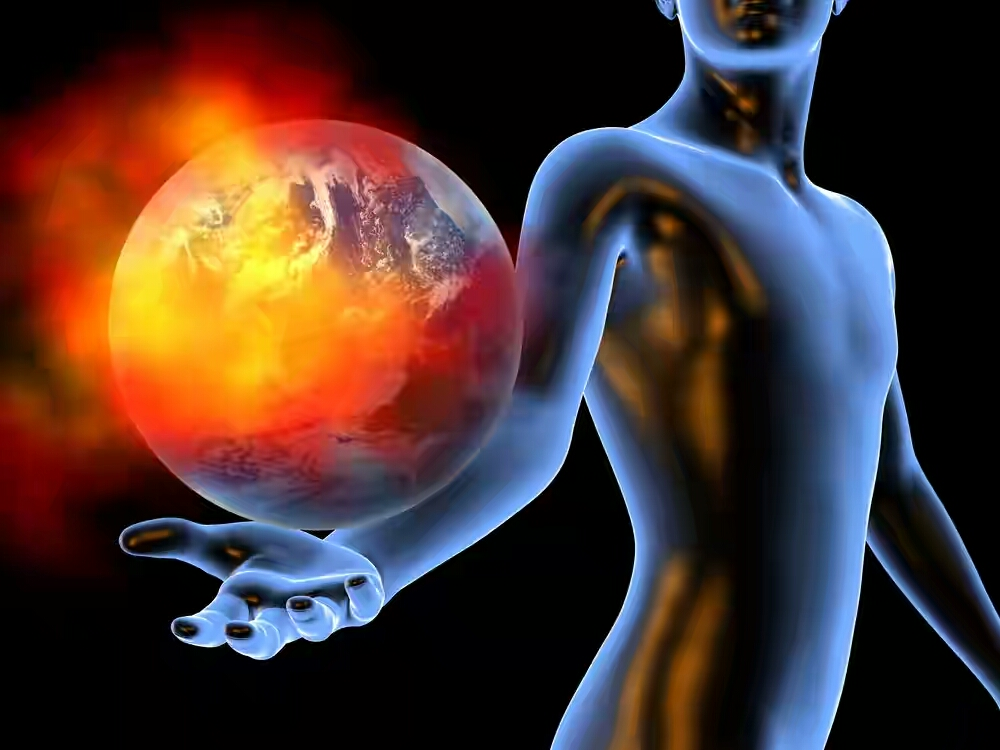

This is due to the effects that natural processes that cause rain, snowfall, hailstroms, rise in sea levels is reliant on many diverse factors.
It is very hard to predict the size of emissions of greenhouse gases in the future years as this is determined majorly through technological advancements and political dicisions.
Global warming produces many negatives effects some of which are decribes here.
- Flood
- Extra water vapour which is present in the atmosphere falls again as rain which leads to floods in various regions of the world.
These content in the atmosphere will fall again as extra rain hence causing flood.
- Drough
- When the weather turns warmer, evaporation process from both land and sea rises.
This leads to drough in the regions where increased evaporation process is not compensated by increased precipitation.
- Crop failure
- In some area of the world,this will result in crop failture and famine particularly in areas where the temperatures are already high.

- Melting Glaciers
- Towns and villages which are dependent on the melting water from the snowy mountains may suffer drought and scarcity of water supply.
It is because the glaciers all over the world are shirnking at a very rapid rate and melting of ice appears to be faster than projected.
.jpg) |
.jpg) |
 |
- Rising sea levels
- It is the most deadly affect of global warming, the rise in temperature is causing the ice and glaciers to melt rapidly.This will lead to rise
to rise of water levels in oceans,rivers and lakes that can pilot devastation in the form of floods.
- Warmer Climate
- The warmer climate will likely cause more heat waves, more violet rainfall and also amplification in the seversity of hailstroms and thunderstorms.
 |
 |
Effects on Living Beings

- Global Warming can severly affect the health of living beings. Excess heat can cause stress which may lead to blood pressure and heart diseases.
- Crop failures and famines,which are a direct consequences of heating up of earth, can cause a decline in human body resistance to viruses and infections.It may also transfer various diseases to other regions
as people will shift from regions of higher temperatures to regions of lower temperatures.Warmer oceans and other surface waters may lead to serve cholera outbreaks and harmful infections in some types of some food.
- It is an established fact that warmer temperatures lead to dehydration which is a major cause of kidney stones.
- Global warming is also affecting animals.They need to move to cooler places in order to survive.For instance, in the Alps, in mountainous Queensland in Australia,
and in the misty forests of Costa Rica. Fish in the North Sea have reported to move northwards.In Africa, elephants face a series of threats including shrinking living space, which brings them more regularly into divergence
with people.